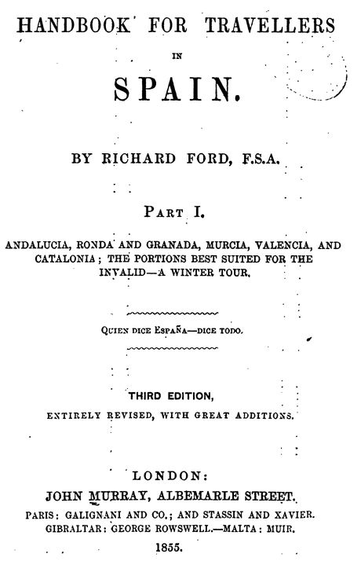
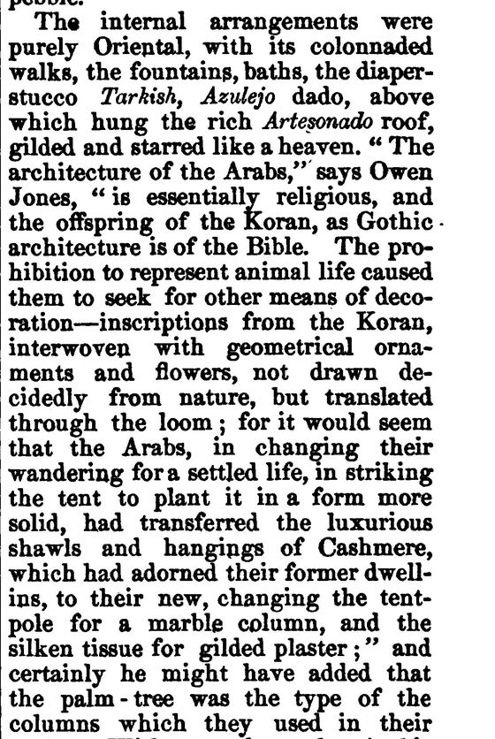
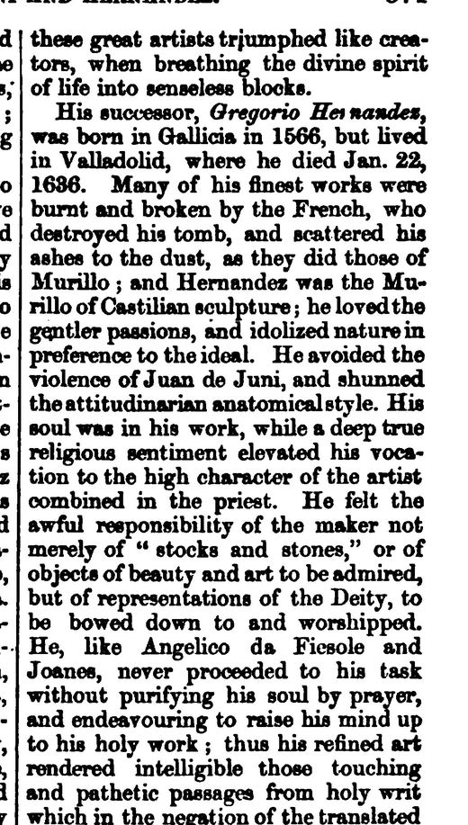

“The offspring of the Koran”: Owen Jones on the Alhambra (Part I, p. 304)

English: London 1855, Part I, Route 25 (Granada), p. 304, scan. Highlighted: the passage Lecky points to.

The severe, simple, almost forbidding exterior of the Alhambra, gives no promise of the Aladdin gorgeousness which once shone within, when the opening of a single door, as if by the tap of a fairy’s wand, admitted the stranger into an almost paradise. … This fortress-palace, the dwelling of an Oriental, was intended to awe the city below with the forbidding exterior of power, to keep out heat, enemies foreign and domestic, and to keep in women. The plain aspect was adopted to avert the effects of the evil eye, the bugbear of Orientals, which scowls on the over prosperous, and dogs their felicity. …
The internal arrangements were purely Oriental, with its colonnaded walks, the fountains, baths, the diaper-stucco Tarkish, Azulejo dado, above which hung the rich Artesonado roof, gilded and starred like a heaven. “The architecture of the Arabs,” says Owen Jones, “is essentially religious, and the offspring of the Koran, as Gothic architecture is of the Bible. The prohibition to represent animal life caused them to seek for other means of decoration—inscriptions from the Koran, interwoven with geometrical ornaments and flowers, not drawn decidedly from nature, but translated through the loom; for it would seem that the Arabs, in changing their wandering for a settled life, in striking the tent to plant it in a form more solid, had transferred the luxurious shawls and hangings of Cashmere, which had adorned their former dwellins, to their new, changing the tent-pole for a marble column, and the silken tissue for gilded plaster;” and certainly he might have added that the palm-tree was the type of the columns which they used in their patios.
“Dwellins” is as printed. Lecky’s own remark in the same note, that the lions of the Court of the Lions are “the solitary instance of a deviation from the command of the Prophet”, is his, not Ford’s or Jones’s on this page.
“Like Angelico da Fiesole and Joanes”: Gregorio Hernández (Part II, p. 571)
English: London 1855, Part II, Route 76 (Valladolid museum), p. 571, scan. Highlighted: what Lecky reports.

His successor, Gregorio Hernandez, was born in Gallicia in 1566, but lived in Valladolid, where he died Jan. 22, 1636. Many of his finest works were burnt and broken by the French, who destroyed his tomb, and scattered his ashes to the dust, as they did those of Murillo; and Hernandez was the Murillo of Castilian sculpture; he loved the gentler passions, and idolized nature in preference to the ideal. … His soul was in his work, while a deep true religious sentiment elevated his vocation to the high character of the artist combined in the priest. He felt the awful responsibility of the maker not merely of “stocks and stones,” or of objects of beauty and art to be admired, but of representations of the Deity, to be bowed down to and worshipped. He, like Angelico da Fiesole and Joanes, never proceeded to his task without purifying his soul by prayer, and endeavouring to raise his mind up to his holy work; thus his refined art rendered intelligible those touching and pathetic passages from holy writ which in the negation of the translated Bible to the people, must have otherwise remained buried in an unknown tongue … Truly devout, his works of relaxation were those of charity; he attended the sick, and buried the friendless dead.
Lecky’s “Juannes” is Ford’s “Joanes”, the Valencian painter Juan de Juanes.
Further down the rabbit hole
Sources that Lecky cites in the notes next to the ones that cite this page.
- Ciampini, Vetera monimentaThe saint’s halo: a sign of eternity, or a shield against pigeons?
- Rio, De l’art chrétienHow oil painting reached Italy, and why its bringer preferred Venice
- Didron, Iconographie chrétienneHow medieval art pictured Christ the Judge
- Tertullian, Adversus Hermogenem“Pingit illicite, nubit assidue”: the painter-heretic
- Vitet, Études sur l’histoire de l’artWhy the saints in Rome’s mosaics grew ugly: Lecky blames the monks, his source blames the barbarians
- Agobard, Liber de imaginibusLecky’s five Agobard quotes checked against Baluze


Backlinks
Every place in Rationalism in Europe that links to this page (generated automatically when the site is built).